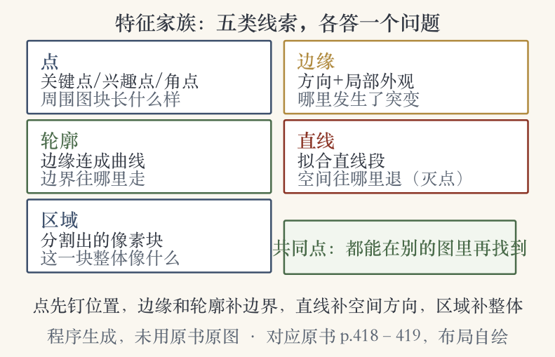
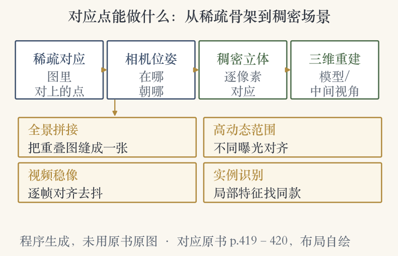
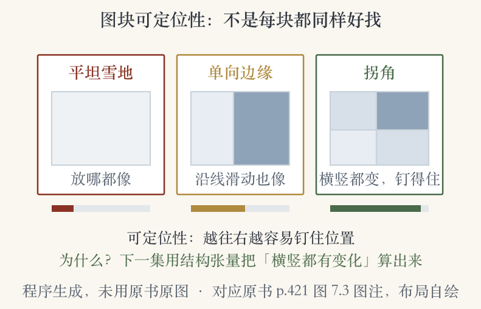

第 7 章开篇 · 特征检测与匹配
两张图里的同一个点，怎么找、怎么对
- 特征检测与匹配是很多应用的基础零件。
- 前一章讲识别，这一章换问题：找同一个点。
- 先看两对图，再决定找什么特征。
- 下一集从角点检测开始。
依据：原书第 419 页
本集范围
两对图：拼接与三维重建
特征家族：点、边缘、轮廓、直线、区域
两条路线与四个阶段
章开篇 · 两对图
两对图：拼接全景与建立三维对应
- 第一对：对齐后无缝拼成全景。
- 第二对：建立稠密对应，重建三维模型。
- 稠密对应也能生成中间视角。
- 图 7.2 问：该用什么特征建立对应？
依据：原书第 419–420 页
两对图的用途
全景拼接：重叠区域对齐
三维重建：稠密对应
中间视角：插出新画面
章开篇 · 特征家族
特征家族：五类线索各答一个问题
- 点：山峰、楼角、门洞、特别形状的雪块。
- 关键点、兴趣点、角点，用周围图块描述。
- 图 7.1 把点、边缘、直线、区域排在一起。
- 区域是分割出的像素块，用于匹配和识别。
依据：原书第 418–419 页

特征家族五类：点/边缘/轮廓/直线/区域｜程序生成，未用教材或论文原图
章开篇 · 边缘
边缘：按方向和局部外观匹配
- 例子：山脊和天空的交界。
- 匹配看方向和局部外观。
- 边缘常是物体边界和遮挡的信号。
- 边缘连成曲线、轮廓，可以跟踪。
依据：原书第 419 页
边缘的信息
方向：变化朝哪边
外观：局部像什么样子
边界：物体与遮挡
章开篇 · 轮廓与直线
轮廓与直线：边界和空间方向
- 轮廓是连起来的边缘，回答边界在哪。
- 直线段可以直接匹配。
- 直线也能求灭点，进而求相机内外参。
- 边缘、轮廓、直线和点都是本章主角。
依据：原书第 419 页
从边到直线
轮廓：边界在哪
直线：空间往哪退
灭点：内外参的来源
章开篇 · 学习顺序
学习顺序：点特征为主，边缘直线为辅
- 本章讲检测方法，也讲跨图建立对应。
- 点特征用途广，7.1 节的算法值得读。
- 更值得亲手实现一遍。
- 边缘和直线可跳过，适合短课。
依据：原书第 419 页
时间怎么分
点特征：主线，必读
边缘与直线：补充信息
分割：最后一部分
章开篇 · 分割的位置
分割：从主课退到辅助位置
- 本章最后讲自底向上的非语义分割。
- 这些方法多被 6.4 节语义分割取代。
- 偶尔用来分组像素，让匹配更快更稳。
依据：原书第 419 页
非语义分割
做法：不认物体，只分像素
现状：多由语义分割接手
用处：加速匹配
章开篇 · 对应点的用途
对应点能做什么：从稀疏到稠密
- 稀疏对应常常是求相机位姿的前一步。
- 有了位姿，才能用立体匹配算稠密对应。
- 还能拼全景、拼高动态范围、做视频稳像。
- 物体实例识别也大量使用对应点。
依据：原书第 419–420 页

对应点用途：稀疏对应→相机位姿→稠密立体→三维重建｜程序生成，未用教材或论文原图
章开篇 · 抗变化与简史
为什么能跨图匹配：抗遮挡与变化
- 有遮挡、尺度变化、旋转变化，也还能匹配。
- 从早期立体匹配就开始用：1974、1983、1988。
- 后来在图像拼接和全自动三维建模里流行。
- 论文线索从 1970 年代排到 2000 年代。
依据：原书第 420 页
历史线索
1974 Hannah：早期立体匹配
1997 Zoghlami：图像拼接
2006 Snavely：运动恢复结构
2007 Brown 与 Lowe：全景拼接
章开篇 · 两条路线
两条路线：局部跟踪与独立检测
- 路线一：一张图找特征，再用局部搜索跟踪。
- 相关或最小二乘都能做局部搜索。
- 路线二：每张图独立检测，再按外观匹配。
- 前者适合视频，后者适合大运动、宽基线。
依据：原书第 420–421 页
怎么选
近视角、连拍、视频：跟踪
大运动、外观变化：匹配
全景、宽基线、识别：匹配
章开篇 · 四个阶段
四阶段：检测、描述、匹配、跟踪
- 检测：找在别的图里也容易匹配的位置。
- 描述：把邻域变成紧凑、稳定的描述子。
- 匹配：在别的图里搜索候选。
- 跟踪：只在特征附近的小邻域里搜。
依据：原书第 421 页
四个动词
检测：在哪
描述：长什么样
匹配：跨图对上
跟踪：视频里跟住
章开篇 · 检测阶段
检测：找换一张图也找得回的点
- 检测看的不是显眼，是换图还能找回。
- 每张图都搜大概率能匹配上的位置。
- 只在原图里显眼、换角度就消失的不算。
依据：原书第 421 页
可重复性
同一物体，换个视角
位置要能被再次检出
这是检测阶段的判据
章开篇 · 描述阶段
描述：把邻域变成可比较的向量
- 关键点周围的区域转成描述子。
- 描述子要紧凑，还要稳定。
- 稳定指在变化下仍能相互比较。
- 位置加长相，才能跨图对上号。
依据：原书第 421 页
两个要求
紧凑：存得小、比得快
稳定：变化下还像
可比较：能算距离
章开篇 · 匹配与跟踪
匹配与跟踪：搜全图还是搜邻域
- 匹配：在别的图里高效搜索候选。
- 跟踪：只在已检测特征附近的小邻域搜。
- 视频里常用跟踪，跨视角常用匹配。
依据：原书第 421 页
搜索范围
全图匹配：不怕大跳
小邻域跟踪：擅长小步
视频优先跟踪
章开篇 · 范例与综述
范例：SIFT 把四个阶段串起来
- Lowe 2004 的 SIFT 是四阶段的范例。
- SIFT 是尺度不变特征变换。
- 想系统看替代方法，可以读系列综述。
- Shi 与 Tomasi 1994、Triggs 2004 有经典回顾。
依据：原书第 421 页
往下怎么走
本集：为什么找特征点
下一集：角点怎么找
再往后：尺度与描述子
章开篇 · 图块可定位性
可定位性：不是每块图块都一样好找
- 图 7.3 比较了不同图块的定位精度。
- 平坦雪地放哪都像，位置定不住。
- 单向边缘沿线滑动也像。
- 拐角横竖都有变化，最容易钉住。
依据：原书第 421 页

图块可定位性：平坦雪地/单向边缘/拐角｜程序生成，未用教材或论文原图